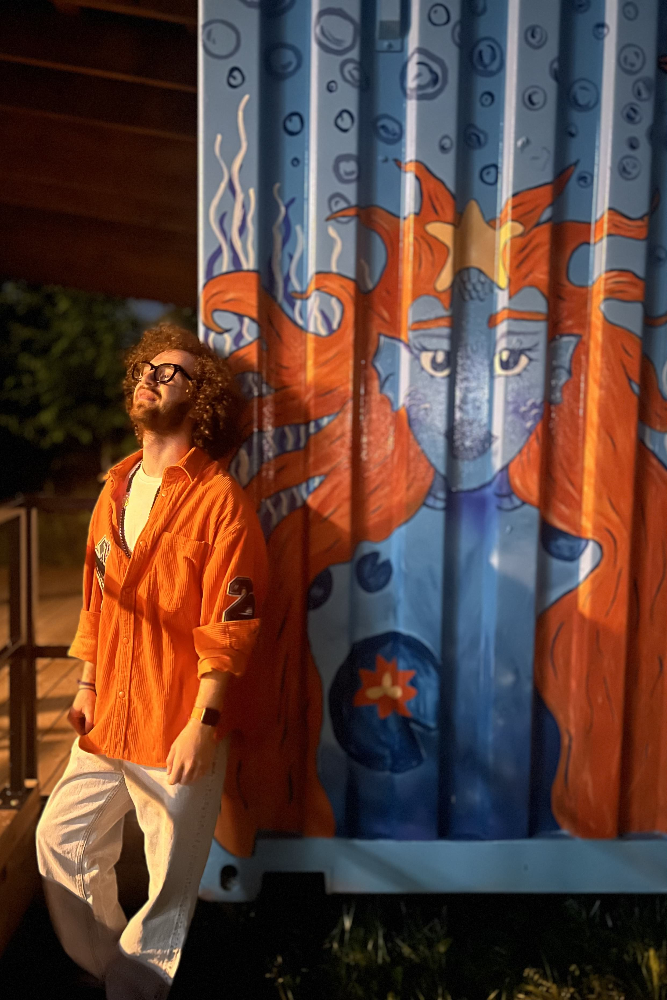

Beyond the
Screen.
When I'm not designing interfaces or wrangling data, you'll find me watching movies, deep in a game, recording podcast episodes, or out shooting photo and video always chasing the next thing to learn.


Movies
Sci-fi and thrillers are where I keep coming back stories that build a system, then test its limits. I tend to follow a director across their entire filmography once their style clicks; it's the same instinct that makes me study a designer's portfolio for patterns, or a dataset for the story hiding inside it. A great film is really just structure and pacing done right the same principles I lean on when I'm designing an interface or shaping a narrative around numbers. A good night usually ends with a film I've already seen and a new one queued up for tomorrow.
Gaming
Gaming is where I unwind, but it's never just unwinding. Fortnite is fast decision-making under pressure read the situation, adapt, execute. Dota 2 is the opposite end of the same coin: longer-form strategy, team coordination, and a meta that rewards understanding systems deeply rather than reacting fast. Between the two I'm either sharpening reflexes or thinking several moves ahead both skills that carry straight back into design reviews and data problems.

Learning
Learning never really stops for me, and lately most of it is code. I'm constantly pulling apart how things are built a new framework, a cleaner way to structure a function, a pattern I saw in someone else's repo. It scratches the same itch as good design: there's always a more elegant solution hiding under the obvious one. Half the time I start learning something for a client project and end up going down a rabbit hole just because I wanted to understand it properly.
Behind the Lens
Most of what I shoot is buildings I'm drawn to the geometry, the way light hits glass and concrete at different times of day. All of it's on an iPhone, which forces a different kind of discipline: no swapping lenses, just paying closer attention to angle and timing to get the shot right in-camera. It's the same instinct that shows up in my UI work clean lines, intentional framing, nothing extra in the shot that doesn't need to be there.
@normal.day.mtlThrough the Lens
A small selection from behind the camera.


images/hobbies/ folder